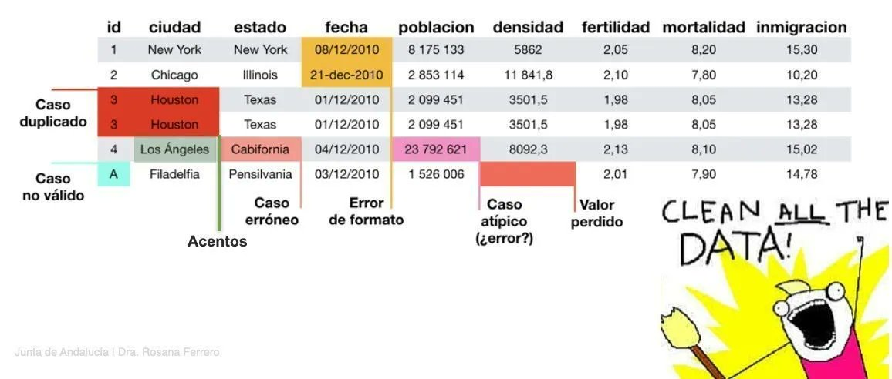

install.packages("pacman") #para instalar
library(pacman) # para llamar/cargarPráctica 5. Repaso procesamiento y análisis de datos en R
Sesión del jueves, 18 de mayo de 2023
Presentación
Objetivo de la práctica
El objetivo de esta guía práctica es repasar los procedimientos básicos para el procesamiento y análisis descripivo de datos en R, los cuales fueron vistos en las sesiones pasadas del laboratorio.
En detalle, aprenderemos:
Establecer un flujo de trabajo en R.
Procesar, limpiar y transformar bases de datos en R.
Realizar análisis desciptivos (medidas de posición, tendencia central y dispersión) en R.
¡Al final de esta práctica la idea es que cada un_ elabore y entienda su propio documento de preparación y análisis de datos!
Recursos de la práctica
En esta práctica trabajaremos con un subset de los datos del Estudio Longitudinal Social de Chile (ELSOC) realizado por COES. Esta base la pueden encontrar en el canal de U-Cursos sección Material Docente, o bien, en el siguiente enlace ELSOC 2022 podrán descargar el archivo que contiene la base ELSOC 2022.
Recuerden que siempre es importante trabajar con el manual/libro de códigos de las bases de datos. El manual de la ELSOC 2022 lo pueden encontrar aquí.
Establecer flujo de trabajo en R
Pasos a seguir:
- Descargar la base de datos vía U-Cursos o mediante el enlace
ELSOC 2022 - Crear un proyecto de R (.Rproj) que se llame “laboratorio03”
- Crear carpetas de Input, Procesamiento y Output
- Ubicar la base de datos en la carpeta Input
- Crear un Script (.R) en la carpeta Procesamiento que se llame “01proc-data”
- Crear un Script (.R) en la carpeta Procesamiento que se llame “02analisis”
En esta parte, trabajaremos sobre el script de 01proc-data
Procesamiento, limpieza y manipulación de datos
1 Cargar librerías
En este ejemplo vamos a usar la siguientes librerías:
pacman: este facilita y agiliza la lectura de los paquetes a utilizar en Rtidyverse: colección de paquetes, de la cual utilizaremos dplyr y havendplyr: nos permite seleccionar variables de un set de datoshaven: cargar y exportar bases de datos en formatos .sav y .dtacar: para recodificar/agrupar valores de variablespsych: para análisis descriptivo de datossjmisc: para análisis descriptivo de datoscrosstable: para tablas de contingencia o doble entrada
Primero, si nos tenemos instalado el paquete pacman, debemos instalarlo y y llamarlo tradicionalmente. Si ya lo tienes instalado, no es necesario este paso, solo debes llamarlo con library().
Luego de tener cargado el paquete pacman, procedemos a usarlo para instalar y cargar las demás librerías:
pacman::p_load(tidyverse, # colección de paquetes para manipulación de datos
dplyr, # para manipular datos
haven, # para importar datos
car) # para recodificar datosTambién se recomienda limpiar nuestro entorno de trabajo y eliminar la notación cientifica, seteando ciertas funciones.
options(scipen = 999) # para desactivar notacion cientifica
rm(list = ls()) # para limpiar el entorno de trabajo2 Importar datos
elsoc_2022 <- read_dta("Input/data/elsoc_w06_subset.dta") # Funciona 3 Explorar datos
View(elsoc_2022) # Ver datos
names(elsoc_2022) # Nombre de columnas
dim(elsoc_2022) # Dimensiones
str(elsoc_2022) # Estructura de los datos (las clases y categorias de repuesta)4 Limpiar datos

4.1 Seleccionar
En este ejemplo utilizaremos las siguientes variables:
- m0_sexo: sexo del entrevistado
- m0_edad: edad del entrevistado
- m13: ingreso mensual entrevistado
- c03: altruismo social generalizado
- c05_03: grado de confianza en carabineros
proc_elsoc <- elsoc_2022 %>%
dplyr::select(edad = m0_edad,
sexo = m0_sexo,
ingreso = m13,
altruismo = c03,
confianza_carab = c05_03)
proc_elsoc# A tibble: 1,000 × 5
edad sexo ingreso altruismo confianza_carab
<dbl> <chr> <dbl> <dbl> <dbl>
1 66 Hombre 1200000 2 3
2 38 Hombre 500000 2 3
3 70 Mujer NA 1 3
4 24 Mujer NA 2 5
5 56 Mujer 500000 2 3
6 52 Mujer NA 2 1
7 64 Mujer NA 2 5
8 24 Mujer 530000 2 3
9 32 Mujer 790000 2 3
10 60 Mujer 400000 2 4
# … with 990 more rows4.2 Filtrar
Quedémonos con aquellos casos cuya edad sea mayor o igual a 15 años.
proc_elsoc <- proc_elsoc %>% dplyr::filter(edad >= 25)
proc_elsoc# A tibble: 980 × 5
edad sexo ingreso altruismo confianza_carab
<dbl> <chr> <dbl> <dbl> <dbl>
1 66 Hombre 1200000 2 3
2 38 Hombre 500000 2 3
3 70 Mujer NA 1 3
4 56 Mujer 500000 2 3
5 52 Mujer NA 2 1
6 64 Mujer NA 2 5
7 32 Mujer 790000 2 3
8 60 Mujer 400000 2 4
9 43 Hombre 1000000 2 4
10 77 Mujer NA 2 5
# … with 970 more rows4.3 Recodificar
Recodifiquemos las variables sexo e ingreso:
proc_elsoc <- proc_elsoc %>%
dplyr::mutate(sexo = car::recode(sexo,
recodes = c("'Hombre' = 'Masculino'; 'Mujer' = 'Femenino'")),
ingreso = car::recode(ingreso,
recodes = c("-888 = NA; -999 = NA")))
proc_elsoc# A tibble: 980 × 5
edad sexo ingreso altruismo confianza_carab
<dbl> <chr> <dbl> <dbl> <dbl>
1 66 Masculino 1200000 2 3
2 38 Masculino 500000 2 3
3 70 Femenino NA 1 3
4 56 Femenino 500000 2 3
5 52 Femenino NA 2 1
6 64 Femenino NA 2 5
7 32 Femenino 790000 2 3
8 60 Femenino 400000 2 4
9 43 Masculino 1000000 2 4
10 77 Femenino NA 2 5
# … with 970 more rowsAhora, las variables altruismo y confianza_carab conviertiéndolas a factor y, si es pertinente, asigarles niveles.
proc_elsoc <- proc_elsoc %>%
dplyr::mutate(altruismo = car::recode(altruismo,
recodes = c("1 = 'La mayoria de las veces tratan de ayudar a los demas';
2 = 'La mayoria de las veces se preocupan solo de si mismas';
3 = 'Depende';
-666 = NA;
-777 = NA;
-888 = NA;
-999 = NA"),
as.factor = TRUE), # transformar a factor
confianza_carab = car::recode(confianza_carab,
recodes = c("1 = 'Nada';
2 = 'Poca';
3 = 'Algo';
4 = 'Bastante';
5 = 'Mucha';
-666 = NA;
-777 = NA;
-888 = NA;
-999 = NA"),
as.factor = TRUE, # transformar a factor
levels = c("Nada",
"Poca",
"Algo",
"Bastante",
"Mucha"))) # asignar niveles
proc_elsoc# A tibble: 980 × 5
edad sexo ingreso altruismo confi…¹
<dbl> <chr> <dbl> <fct> <fct>
1 66 Masculino 1200000 La mayoria de las veces se preocupan solo de… Algo
2 38 Masculino 500000 La mayoria de las veces se preocupan solo de… Algo
3 70 Femenino NA La mayoria de las veces tratan de ayudar a l… Algo
4 56 Femenino 500000 La mayoria de las veces se preocupan solo de… Algo
5 52 Femenino NA La mayoria de las veces se preocupan solo de… Nada
6 64 Femenino NA La mayoria de las veces se preocupan solo de… Mucha
7 32 Femenino 790000 La mayoria de las veces se preocupan solo de… Algo
8 60 Femenino 400000 La mayoria de las veces se preocupan solo de… Bastan…
9 43 Masculino 1000000 La mayoria de las veces se preocupan solo de… Bastan…
10 77 Femenino NA La mayoria de las veces se preocupan solo de… Mucha
# … with 970 more rows, and abbreviated variable name ¹confianza_carab4.4 Tratamiento casos pérdidos
Identifiquemos primero los casos pérdidos tanto en la base de datos completa como en las respectivas variables.
is.na(proc_elsoc)
is.na(proc_elsoc$ingreso)sum(is.na(proc_elsoc))[1] 454En toda la base, tenemos 454 casos pérdidos. Ahora veamos cuántos hay por cada columna/variable.
colSums(is.na(proc_elsoc)) edad sexo ingreso altruismo confianza_carab
0 0 451 3 0 Una vez identificamos los valores nulos, podemos proceder a removerlos de la base de datos. El comando na.omit() eliminará todas las filas que presenten casos perdidos.
proc_elsoc <- na.omit(proc_elsoc)
proc_elsoc# A tibble: 528 × 5
edad sexo ingreso altruismo confi…¹
<dbl> <chr> <dbl> <fct> <fct>
1 66 Masculino 1200000 La mayoria de las veces se preocupan solo de… Algo
2 38 Masculino 500000 La mayoria de las veces se preocupan solo de… Algo
3 56 Femenino 500000 La mayoria de las veces se preocupan solo de… Algo
4 32 Femenino 790000 La mayoria de las veces se preocupan solo de… Algo
5 60 Femenino 400000 La mayoria de las veces se preocupan solo de… Bastan…
6 43 Masculino 1000000 La mayoria de las veces se preocupan solo de… Bastan…
7 59 Masculino 1200000 La mayoria de las veces se preocupan solo de… Poca
8 44 Femenino 150000 La mayoria de las veces se preocupan solo de… Bastan…
9 51 Femenino 350000 La mayoria de las veces tratan de ayudar a l… Poca
10 45 Femenino 200000 La mayoria de las veces se preocupan solo de… Bastan…
# … with 518 more rows, and abbreviated variable name ¹confianza_carab5 Transformar variables
En este ejemplo, transformaremos las variables edad e ingresos, y crearemos una nueva variable llamada año de la encuesta y otra llamada ingreso_minimo.
¡Veámos cómo se hace!
Generemos las nueva variable año:
proc_elsoc <- proc_elsoc %>% dplyr::mutate(ano = 2022)
proc_elsoc# A tibble: 528 × 6
edad sexo ingreso altruismo confi…¹ ano
<dbl> <chr> <dbl> <fct> <fct> <dbl>
1 66 Masculino 1200000 La mayoria de las veces se preocupan s… Algo 2022
2 38 Masculino 500000 La mayoria de las veces se preocupan s… Algo 2022
3 56 Femenino 500000 La mayoria de las veces se preocupan s… Algo 2022
4 32 Femenino 790000 La mayoria de las veces se preocupan s… Algo 2022
5 60 Femenino 400000 La mayoria de las veces se preocupan s… Bastan… 2022
6 43 Masculino 1000000 La mayoria de las veces se preocupan s… Bastan… 2022
7 59 Masculino 1200000 La mayoria de las veces se preocupan s… Poca 2022
8 44 Femenino 150000 La mayoria de las veces se preocupan s… Bastan… 2022
9 51 Femenino 350000 La mayoria de las veces tratan de ayud… Poca 2022
10 45 Femenino 200000 La mayoria de las veces se preocupan s… Bastan… 2022
# … with 518 more rows, and abbreviated variable name ¹confianza_carabTransformar variables con case_when() e if_else()
Generemos nuevas variables para edad e ingresos dejándolas como tramos con case_when().
proc_elsoc <- proc_elsoc %>%
dplyr::mutate(tramo_edad = case_when(edad <= 29 ~ "Jovenes",
edad >= 30 & edad <= 59 ~ "Adultos",
edad >= 60 ~ "Adutos mayores"),
tramo_ingreso = case_when(ingreso <= 250000 ~ "Tramo 1",
ingreso > 250000 & ingreso <= 500000 ~ "Tramo 2",
ingreso > 500000 & ingreso <= 750000 ~ "Tramo 3",
ingreso > 750000 & ingreso <= 1000000 ~ "Tramo 4",
ingreso > 1000000 ~ "Tramo 5"))
proc_elsoc# A tibble: 528 × 8
edad sexo ingreso altruismo confi…¹ ano tramo…² tramo…³
<dbl> <chr> <dbl> <fct> <fct> <dbl> <chr> <chr>
1 66 Masculino 1200000 La mayoria de las vece… Algo 2022 Adutos… Tramo 5
2 38 Masculino 500000 La mayoria de las vece… Algo 2022 Adultos Tramo 2
3 56 Femenino 500000 La mayoria de las vece… Algo 2022 Adultos Tramo 2
4 32 Femenino 790000 La mayoria de las vece… Algo 2022 Adultos Tramo 4
5 60 Femenino 400000 La mayoria de las vece… Bastan… 2022 Adutos… Tramo 2
6 43 Masculino 1000000 La mayoria de las vece… Bastan… 2022 Adultos Tramo 4
7 59 Masculino 1200000 La mayoria de las vece… Poca 2022 Adultos Tramo 5
8 44 Femenino 150000 La mayoria de las vece… Bastan… 2022 Adultos Tramo 1
9 51 Femenino 350000 La mayoria de las vece… Poca 2022 Adultos Tramo 2
10 45 Femenino 200000 La mayoria de las vece… Bastan… 2022 Adultos Tramo 1
# … with 518 more rows, and abbreviated variable names ¹confianza_carab,
# ²tramo_edad, ³tramo_ingresoAhora, generemos una nueva variable llamada ingreso_minimo con la función if_else().
proc_elsoc <- proc_elsoc %>%
dplyr::mutate(ingreso_minimo = if_else(ingreso < 410000, "debajo minimo", "sobre minimo"))
proc_elsoc# A tibble: 528 × 9
edad sexo ingreso altruismo confi…¹ ano tramo…² tramo…³ ingre…⁴
<dbl> <chr> <dbl> <fct> <fct> <dbl> <chr> <chr> <chr>
1 66 Masculino 1200000 La mayoria de … Algo 2022 Adutos… Tramo 5 sobre …
2 38 Masculino 500000 La mayoria de … Algo 2022 Adultos Tramo 2 sobre …
3 56 Femenino 500000 La mayoria de … Algo 2022 Adultos Tramo 2 sobre …
4 32 Femenino 790000 La mayoria de … Algo 2022 Adultos Tramo 4 sobre …
5 60 Femenino 400000 La mayoria de … Bastan… 2022 Adutos… Tramo 2 debajo…
6 43 Masculino 1000000 La mayoria de … Bastan… 2022 Adultos Tramo 4 sobre …
7 59 Masculino 1200000 La mayoria de … Poca 2022 Adultos Tramo 5 sobre …
8 44 Femenino 150000 La mayoria de … Bastan… 2022 Adultos Tramo 1 debajo…
9 51 Femenino 350000 La mayoria de … Poca 2022 Adultos Tramo 2 debajo…
10 45 Femenino 200000 La mayoria de … Bastan… 2022 Adultos Tramo 1 debajo…
# … with 518 more rows, and abbreviated variable names ¹confianza_carab,
# ²tramo_edad, ³tramo_ingreso, ⁴ingreso_minimo6 Guardar y exportar
saveRDS(proc_elsoc, file = "Output/datos_proc.Rdata")Análisis descriptivo de datos
Recordemos que el flujo recomendado de trabajo en R corresponde a:
- Descargar la base de datos
- Crear un proyecto de R (.Rproj)
- Crear carpetas de Input, Procesamiento y Output
- Ubicar la base de datos en la carpeta Input
- Crear un Script (.R) en la carpeta Procesamiento que se llame “01proc-data”
- Crear un Script (.R) en la carpeta Procesamiento que se llame “02analisis”
Como ya tenemos creado el archivo de sintaxis llamado “02analisis” trabajamos sobre él.
1 Cargar librerías
Este paso ya lo realizamos y cargamos todas las librerías necesarias. Pero si, al trabajar los distintos script lo hacemos en sesiones diferentes, debemos volver a cargar las librerías.
install.packages("pacman") #para instalar
library(pacman) # para llamar/cargarpacman::p_load(tidyverse, # colección de paquetes para manipulación de datos
dplyr, # para manipular datos
psych, # para analizar datos
crosstable, # para tablas de contingencia
sjmisc) # para analizar datos
options(scipen = 999) # para desactivar notacion cientifica
rm(list = ls()) # para limpiar el entorno de trabajo2 Importar datos
Usamos los datos creados en el procesamiento que se encuentran guardados en la carpeta output.
datos_proc <- readRDS("output/datos_proc.Rdata")3 Estadísticos descriptivos para variables categóricas
Para analizar de manera descriptiva a las variables categóricas, esto es, con nivel de medición nominal y ordinal, podemos calcular tablas de frecuencias.
3.1. Frecuencias absolutas y relativas
Para las variables nominales podemos usar tablas de frecuencias absolutas y relativas, y con ellas conocer la moda, es dedcir, el valor con mayor cantidad de observaciones.
(freq_table1 <-table(datos_proc$altruismo))
Depende
27
La mayoria de las veces se preocupan solo de si mismas
421
La mayoria de las veces tratan de ayudar a los demas
80 prop.table(freq_table1)*100
Depende
5.113636
La mayoria de las veces se preocupan solo de si mismas
79.734848
La mayoria de las veces tratan de ayudar a los demas
15.151515 Acá podemos ver que el valor con mayor cantidad de obervaciones corresponde a “La mayoria de las veces se preocupan solo de si mismas”.
3.2. Frecuencias acumuladas
Mientras que si trabajamos con variables ordinales, podemos usar también la frecuencia acumulada:
(freq_table2 <- table(datos_proc$tramo_ingreso))
Tramo 1 Tramo 2 Tramo 3 Tramo 4 Tramo 5
81 197 106 71 73 (freq_table3 <- prop.table(freq_table2)*100)
Tramo 1 Tramo 2 Tramo 3 Tramo 4 Tramo 5
15.34091 37.31061 20.07576 13.44697 13.82576 cumsum(freq_table3) Tramo 1 Tramo 2 Tramo 3 Tramo 4 Tramo 5
15.34091 52.65152 72.72727 86.17424 100.00000 tbl3 <- table(datos_proc$tramo_ingreso)
cbind(Freq=tbl3, relat = prop.table(tbl3)*100, Cum = cumsum(tbl3)) Freq relat Cum
Tramo 1 81 15.34091 81
Tramo 2 197 37.31061 278
Tramo 3 106 20.07576 384
Tramo 4 71 13.44697 455
Tramo 5 73 13.82576 528Otra manera de calcular frecuencias (absolutas, relativas y acumuladas) en R, es mediante la función frq() del paquete sjmisc.
sjmisc::frq(datos_proc$tramo_ingreso)x <character>
# total N=528 valid N=528 mean=2.73 sd=1.27
Value | N | Raw % | Valid % | Cum. %
----------------------------------------
Tramo 1 | 81 | 15.34 | 15.34 | 15.34
Tramo 2 | 197 | 37.31 | 37.31 | 52.65
Tramo 3 | 106 | 20.08 | 20.08 | 72.73
Tramo 4 | 71 | 13.45 | 13.45 | 86.17
Tramo 5 | 73 | 13.83 | 13.83 | 100.00
<NA> | 0 | 0.00 | <NA> | <NA>3.3. Tablas de contingencia
También podemos cruzar dos variables mediante las llamadas tablas de contingencia o tablas cruzadas. Además de conocer la frecuencia absoluta en cada casilla, podemos también conocer la proporción o frecuencia relativa para cada casilla y el total de la filas y columnas.
crosstable(datos_proc, cols = sexo, by = tramo_edad)# A tibble: 2 × 6
.id label variable Adultos `Adutos mayores` Jovenes
<chr> <chr> <chr> <chr> <chr> <chr>
1 sexo sexo Femenino 222 (75.00%) 44 (14.86%) 30 (10.14%)
2 sexo sexo Masculino 162 (69.83%) 57 (24.57%) 13 (5.60%) crosstable(datos_proc, cols = sexo, by = tramo_edad, total = "both") #fila y columna# A tibble: 3 × 7
.id label variable Adultos `Adutos mayores` Jovenes Total
<chr> <chr> <chr> <chr> <chr> <chr> <chr>
1 sexo sexo Femenino 222 (75.00%) 44 (14.86%) 30 (10.14%) 296 (56.06%)
2 sexo sexo Masculino 162 (69.83%) 57 (24.57%) 13 (5.60%) 232 (43.94%)
3 sexo sexo Total 384 (72.73%) 101 (19.13%) 43 (8.14%) 528 (100.00%)crosstable(datos_proc, cols = sexo, by = tramo_edad, total = "row") #solo fila# A tibble: 2 × 7
.id label variable Adultos `Adutos mayores` Jovenes Total
<chr> <chr> <chr> <chr> <chr> <chr> <chr>
1 sexo sexo Femenino 222 (75.00%) 44 (14.86%) 30 (10.14%) 296 (56.06%)
2 sexo sexo Masculino 162 (69.83%) 57 (24.57%) 13 (5.60%) 232 (43.94%)crosstable(datos_proc, cols = sexo, by = tramo_edad, total = "column") #solo columna# A tibble: 3 × 6
.id label variable Adultos `Adutos mayores` Jovenes
<chr> <chr> <chr> <chr> <chr> <chr>
1 sexo sexo Femenino 222 (75.00%) 44 (14.86%) 30 (10.14%)
2 sexo sexo Masculino 162 (69.83%) 57 (24.57%) 13 (5.60%)
3 sexo sexo Total 384 (72.73%) 101 (19.13%) 43 (8.14%) 4 Estadísticos descriptivos para variables numéricas
A diferencia de las variables categóricas, a las variables numéricas les podemos calcular una mayor cantidad de estadísticos descriptivos, como medidas de tendencia central, dispersión o posición.
Como ya vimos en clases:
- dentro de las medidas de tendencia central que podemos calcular para describir a una variable numérica encontramos: media, mediana;
- dentro de las medidas de dispersión podemos señalar: desviación estándar, variancia, coeficiente de variación, rango;
- dentro de las medidas de posición podemos mencionar: mediana, q1, q3, mínimo, máximo.
psych::describe(datos_proc$edad) vars n mean sd median trimmed mad min max range skew kurtosis se
X1 1 528 47.01 12.15 47 46.95 14.83 25 84 59 0.08 -0.83 0.53psych::describe(datos_proc$edad,
quant = c(.25,.75),
IQR = TRUE) vars n mean sd median trimmed mad min max range skew kurtosis se
1 1 528 47.01 12.15 47 46.95 14.83 25 84 59 0.08 -0.83 0.53
IQR Q0.25 Q0.75
1 19 38 57psych::describe(datos_proc$ingreso,
quant = c(.25,.75),
IQR = T) vars n mean sd median trimmed mad min max range skew
1 1 528 689268.9 844589.1 500000 569325.5 296520 0 15000000 15000000 10.12
kurtosis se IQR Q0.25 Q0.75
1 156.57 36756.02 450000 350000 800000